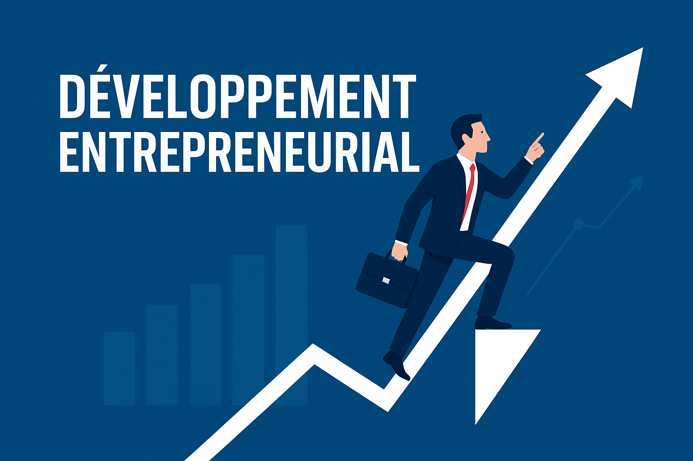

Découvrez nos formations et ressources destinées à renforcer les compétences des jeunes entrepreneurs marocains. Nos ateliers, webinaires et programmes d’apprentissage sont conçus pour stimuler la créativité et le développement professionnel.
Nos ateliers et webinaires offrent des séances interactives animées par des experts dans différents domaines : marketing, gestion, innovation, design, et plus encore. Ces sessions vous permettent de poser vos questions en direct et d’apprendre de manière pratique.
Ateliers hebdomadaires sur la création d’entreprise:

Webinaires sur le marketing digital:

Sessions de formation en leadership et communication:

Prochain atelier : "Comment transformer une idée en projet viable" — Inscrivez-vous dès maintenant !
Revenir au haut du pageRetrouvez ici une sélection de ressources gratuites : guides, vidéos, articles et supports de formation pour développer vos compétences à votre rythme.
Guide PDF : Démarrer son projet pas à pas
Ces ressources sont constamment mises à jour pour vous offrir un apprentissage de qualité adapté à vos besoins.
Revenir au haut du pageCe volet vise à accompagner les jeunes entrepreneurs dans la construction de leurs compétences stratégiques : gestion de projet, leadership, innovation, et esprit d’équipe.
| Compétence clé | Description | Durée estimée |
|---|---|---|
| Leadership | Apprendre à inspirer et guider une équipe vers un objectif commun. | 2 semaines |
| Gestion de projet | Maîtriser les étapes de planification, exécution et suivi d’un projet. | 3 semaines |
| Communication | Améliorer sa capacité à présenter et défendre ses idées efficacement. | 2 semaines |
Astuce : participez à nos programmes de mentorat pour appliquer concrètement ces compétences sur le terrain.
Revenir au haut du page